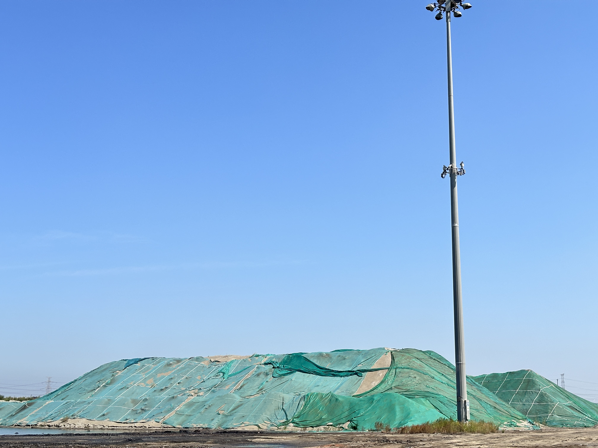

2026-10-13
Oman Steel Slag Agreement Links Steel and Clinker Supply
A three-year industrial partnership covering approximately one million tonnes of steel slag shows how circular raw-material supply can move from disposal management into clinker production.
阿曼钢渣合作打通钢铁与熟料循环供应链
一项为期三年、涉及约 100 万吨钢渣的产业合作表明，循环原料供应正从废弃物处置走向熟料生产环节。

Jindal Steel Oman and Oman Cement Company have signed a three-year memorandum of understanding covering the use of approximately one million tonnes of steel slag as an alternative raw material in clinker production. Reports published on 12 and 13 October describe the initiative as an industrial-symbiosis project intended to conserve virgin resources and improve the productive use of a steelmaking by-product.
1. Scale turns a waste stream into a supply-chain commitment
A multi-year volume of this size requires more than identifying a technically usable material. Steelworks output, slag processing, storage, transport and cement-plant consumption must be coordinated as a repeatable flow. Moisture, particle size, metallic content and chemical variability can affect handling and kiln-feed planning. The commercial value therefore depends on both material suitability and dependable delivery.
2. Alternative raw material does not mean automatic acceptance
Steel slag is not the same product as granulated blast-furnace slag or GGBFS. Its role in this agreement is as an alternative input to clinker manufacturing, not as a direct substitute for every supplementary cementitious material. Plant-specific trials, representative sampling, chemistry limits, process compatibility and environmental controls remain essential before routine use. The reported tonnage is an agreement scope, not evidence that the full volume has already been consumed.
3. Industrial symbiosis needs operational evidence
The partnership links two heavy industries with complementary material flows. If implemented consistently, it can reduce disposal pressure and lower demand for selected virgin raw materials. Procurement and operations teams should still define acceptance criteria, testing frequency, rejected-load procedures, inventory responsibility and delivery schedules. Those controls are what turn a circular-economy proposal into reliable clinker-plant input.
Takeaway: The Oman agreement is a practical signal that steel-sector by-products can become planned cement-plant feedstocks at meaningful scale. Its wider relevance lies in disciplined qualification and coordinated supply—not in treating every slag stream as interchangeable. Sources: Times of Oman, 12 October 2026; CemNet, 13 October 2026.
Jindal Steel Oman 与 Oman Cement Company 已签署一份为期三年的谅解备忘录，计划将约 100 万吨钢渣作为熟料生产的替代原料。10 月 12 日和 13 日发布的报道将其描述为一项产业协同项目，目标是节约原生资源，并提高炼钢副产物的资源化利用水平。
1. 规模化让废物流转变为供应链承诺
如此规模的多年期合作，不只是找到一种技术上可用的材料。钢厂产出、钢渣加工、仓储、运输与水泥厂消耗需要形成可重复的协同流程。水分、粒径、金属含量与化学波动都可能影响装卸和窑料配制，因此商业价值同时取决于材料适用性与交付可靠性。
2. 替代原料不等于自动通过认证
钢渣不同于粒化高炉矿渣，也不同于矿渣粉（GGBFS）。该合作中钢渣的角色，是作为熟料生产的替代投入，并不意味着它可以直接替代所有补充性胶凝材料。常态化使用前仍需完成工厂针对性试验、代表性取样、化学指标限制、工艺兼容性和环保控制。报道中的数量是协议覆盖范围，并不代表全部数量已经完成使用。
3. 产业协同需要运行证据支撑
这项合作把两类具有互补物料流的重工业连接起来。如果稳定实施，可降低处置压力，并减少部分原生原料需求。但采购和运营团队仍应明确验收标准、检测频率、不合格批次处理、库存责任与交付计划。正是这些控制措施，才能把循环经济方案转化为水泥熟料生产的可靠投入。
结论：阿曼的这项合作释放出一个务实信号：钢铁行业副产物可以在有意义的规模上成为水泥厂计划性原料。其更广泛的价值在于严格认证与协同供应，而不是把所有矿渣或钢渣视为可互换材料。来源：Times of Oman，2026 年 10 月 12 日；CemNet，2026 年 10 月 13 日。